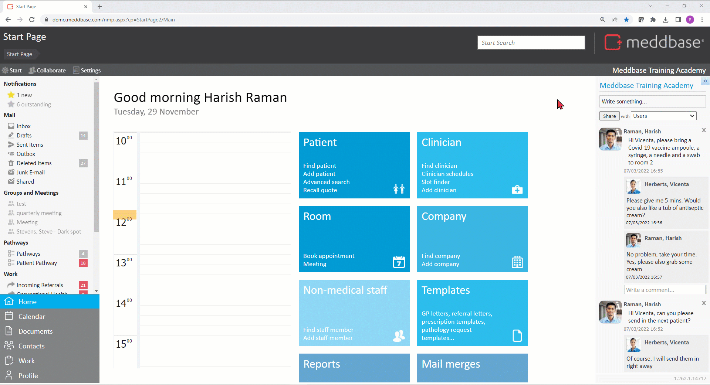
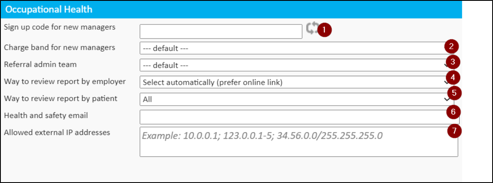
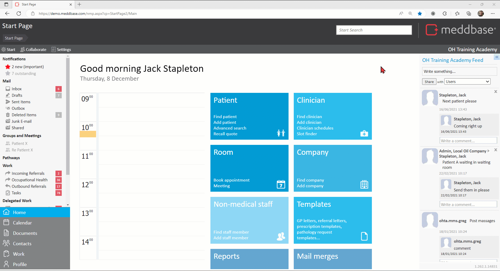
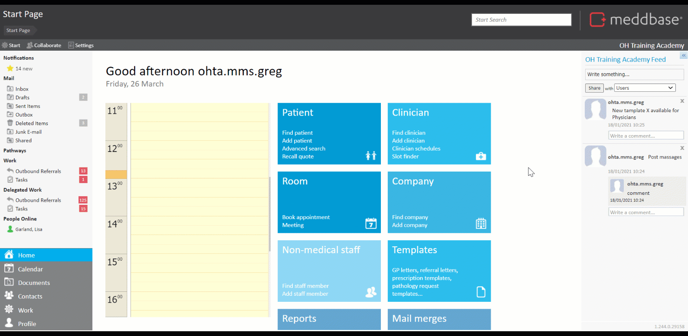

Meddbase gives users access to a comprehensive platform accommodating various aspects and workflows in Occupational Health. This functionality requires multiple configuration tasks to be completed in Meddbase.
What is the purpose of the article?
This article describes:
Registering a new OH client
Client departments and client-specific OH settings
Registering client staff
Registering client managers and setting portal permissions
New client billing automation
What are the assumptions?
This article is based on the assumption that Occupational Health configuration has been completed in your Meddbase system and you are simply onboarding a new client/employer and their staff.
The below articles provide a full description of configuring Meddbase for Occupational Health:
The first step in onboarding a new client is creating a their company record in Meddbase. To do this:
From the Star Page click Add company on the Company tile
Capture as much detail as needed with the minimum being:
Name
Type - in OH this is typically set to Employer
Click Save to create the company record
Client departments and client-specific OH settings
Client departments
Meddbase allows defining departments for client companies (employers) so that when registering patients (employees and managers), they can be assigned to their respective departments. Furthermore, managers can be then granted visibility of only selected departments they manage.
To create a department:
From the Start Page click the Admin tile.
Click the Common Catalogues tile.
Expand the Employee Departments catalogue.
Click New employee department.
Name the department accordingly and provide a Description (optional), e.g. Name - Department 1; Description - Operations.
Click in the Company field (populated with the Chamber company by default) and search for the company you are creating a department for.
Click the search result.
Click Save to create the department*.
*You can create sub-Departments and/or Divisions for departments

Client specific OH settings
Every Company Details page contains an Occupational Health section where company-specific OH settings can be defined*:
*These settings allow overriding some default OH behaviours of the system and allow for client-specific workflows

ign up code for new managers - allows new managers hired by this company to self-register via the Referral Portal and their records will also be created in Meddbase.
Charge band for new manager - determines which charge band (contract) a new manager will belong to/be governed by.
Referral Admin Team - allows selecting a role group managing referrals from this employer
Way to review report by employer - allows selecting an automatic or manual way for this employer to review the OH report.
Way to review the report by patient - allows selecting an automatic or manual way for the referred patients to review the OH report. The patient report review step can also be disabled for this company.
Health and Safety email - allows a hard-coded message to be sent to a selected email recipient when a new absence caused by a work accident is logged (relevant in the Absence Management workflow).
Allowed external IP addresses - allows managers working for this company to log in to the Referral Portal only from the listed IP addresses.
Registering client staff
When registering a client's employee*, it is important to ensure all their details, especially mobile and work email are correct.
*Employees/patients can be uploaded to the chamber in bulk via the Data Imports tool. Please reach out to your Project Manager or the Client Account Management Team on accountmanagement@meddbase.com to discuss a data import
To create a new employee record:-
From the Start Page, click the Patient tile, and click Add Patient
On the patient registration page as a minimum, fill in the fields marked with a vertical blue bar (mandatory) and contact and address details (recommended) *
In the Account section, under the Payer dropdown, select Employer
In the Employer section, click on the Company field, search and select the respective employer **
In the Employee Details section, a previously created Department can be selected
Click Save and select the patient's contact preferences and click OK.
*The layout of the registration page can be amended; Layout > Unlock For Editing. Click here for more details. **A default charge band is automatically assigned to an employer. However, it requires further configuration.

Registering client managers and setting portal permissions
Employers' managers also need to be registered, as shown above. However, there is an extra layer of setup allowing a line manager oversight of departments and access to workflows via the Occupational Health Portal:
Navigate to the manager's Patient Record page (Start Page > Find Patient)
Locate the Referral Portal icon*, click on it and select Portal Account Settings
*If both the Referral Portal and Patient Portal are in use, this icon will be shown as Online Portals, and Referral Portal will be a sub-category.
The Permissions section gives the manager access to the following workflows:
Case management: The user can refer patients and manage the referrals.
Recall management: The user can view and manage the recalls.
User management: The user can create/edit and remove users.
Bulk case reallocation: The user can reallocate all referrals from one user to another.
Statistics/Charts: The user can view portal statistics and charts.
Questionnaire management: The user can share and delete questionnaire modules.
The Departments section allows selecting (ticking) which departments the manager can view and/or manage:
View Department - the manager (OH portal user) can access employees assigned to the respective department and modify data (cases, recalls, absences etc.) if they have the corresponding Permission.
Manage Department - the manager (OH portal user) will receive notification about employees assigned to the respective department (e.g. absences, PPQ auto-created referrals).
The choice to Create and invite and Create with no invitation means we can either notify the manager of the Referral Portal access via email or not.

New client billing automation
Once the new client, their departments, employees and managers have been set up, you must configure the Billing Rules for the new company, set eligibility and pricing and create visibility and access to your services on the Occupational Health Portal.
Furthermore, you can state the SLA (Service Level Agreement) details and allow managers to send referral and/or make direct bookings.
The full Billing Rules setup process for a new client is described here.